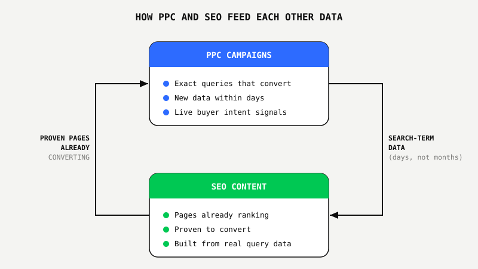
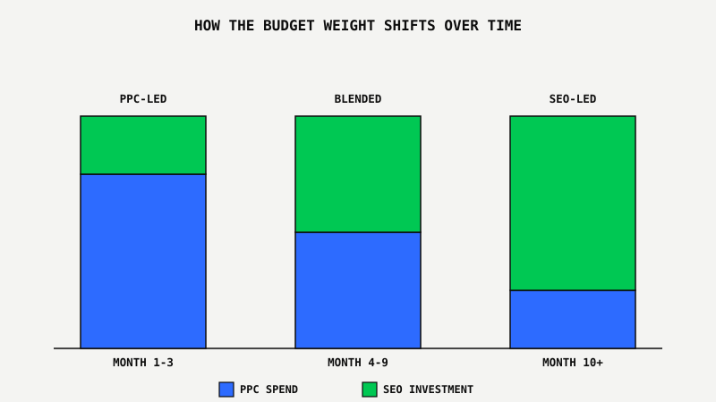

SEO and PPC Together: Why Running Both Beats Picking One
 By Akshat Singh··8 min read·Growth Strategy
By Akshat Singh··8 min read·Growth Strategy
Key Takeaways
- Running SEO and PPC in the same account lowers blended cost per acquisition over time. PPC catches the demand you don't rank for yet. SEO takes over that same demand for free once it ranks.
- PPC generates exact converting search queries within days. That's faster and more reliable than any keyword-volume tool, and it tells SEO exactly what content to build next.
- Pages that already rank organically are proof of what converts. Point paid traffic at them instead of guessing which landing page to test.
- Paid ads create brand awareness that shows up later as branded search. Without SEO in place, that branded search either leaks to a competitor bidding on your name, or it goes nowhere.
- There's no fixed 50/50 split. New sites lean PPC-heavy in month one through three. Established sites with existing content should lean SEO-first and let PPC fill the specific gaps.
The Rented Storefront Problem
Two business owners open shops on the same block. One rents the storefront with the best foot traffic on the street. Prime spot. Premium rent, paid every single month.
The other buys a rundown building two blocks over. Slower start. New signage, new windows, months of renovation before anyone notices.
Month one, the renter wins easily. Customers walk in immediately. The owner is still hanging drywall.
Give it eighteen months. The renter is still paying full rent, still competing for that same corner against anyone with a bigger budget. The owner has a finished building on a block that knows their name now. Stop paying for renovations and the building doesn't disappear. The customer relationships don't disappear either.
That's PPC versus SEO in one paragraph. Most businesses hear that and immediately try to pick a side. That's the mistake. Not the platform.
Most agencies sell you one or the other because it's easier to bill for one channel. We run PPC and SEO in the same account because they compound each other, and separating them on purpose leaves money on the table.
Why Picking Just One Costs You More, Not Less
Picking only PPC means paying full price for every click, forever, while CPCs climb every year in almost every industry. Picking only SEO means months of near-zero traffic while competitors who also run PPC capture the buyers actively searching right now.
Running both spreads the cost curve instead of betting everything on one timeline. PPC pays the bills on the keywords you don't rank for yet. SEO gradually takes over the keywords you do rank for, and every keyword that shifts from paid to organic lowers your blended cost per acquisition without you spending a dollar more.
Bad math. Bad decisions. Bad ROI. That's what happens when a business treats SEO and PPC as competing line items on a budget spreadsheet instead of two stages of the same funnel.
The Data Sharing Advantage Nobody Talks About
The single most underused advantage of running SEO and PPC together is the search-term data. PPC campaigns generate exact-match query data within days, real phrases real buyers typed before they converted, not estimates from a keyword tool. That data tells SEO exactly what to write next, instead of guessing off search-volume software that's frequently wrong about intent.
It runs in the other direction too. SEO content that already ranks organically is proof of what actually converts. Point paid traffic at those pages instead of testing a brand-new landing page from scratch. You already have the evidence.

Doesn't it seem backwards to run two channels side by side and never let them talk to each other?
Branded Search Is The Compounding Return PPC Alone Never Builds
Someone sees your ad, doesn't click, and searches your brand name a week later. That search either lands as a free organic click, if you rank for your own name, or it gets bid on again by a competitor buying your brand terms at a fraction of what they'd pay for a generic keyword.
PPC alone creates that awareness and hands the follow-through to whoever shows up in the organic results. SEO alone never generates that initial awareness fast enough to build branded search volume in the first place. Running both means the awareness PPC creates gets captured by the rankings SEO builds, instead of leaking to whoever bid the hardest on your own name.
Where The Budget Split Actually Makes Sense
There's no universal split that works for every business. The right ratio depends on how much of your target keyword set you already rank on page one for, not on a rule of thumb from a marketing blog.
New sites and new offers should weight PPC heavier in the first few months, because SEO hasn't had time to work yet and there's no organic traffic to lose by waiting. Established sites with decent existing content should weight SEO investment first, since the compounding return is already available, and let PPC fill only the specific gaps organic doesn't cover yet.

What Smart Businesses Are Doing About It
The businesses getting this right aren't choosing a favorite channel and defending it in every meeting. They're running both under one strategy, sharing data between them on purpose, and letting the cheaper channel take over as it earns the right to.
That's the same principle behind the Google Ads Proof Program™ and SEO Autopilot™ running in the same account: paid campaigns that have generated $22.9M in revenue at 632% ROAS on one account, and organic authority work that took a client's domain rating from 18 to 47 in eight months on another. Different timelines. Same growth account. Same data feeding both sides.
See what running both looks like on one account, one strategy, one growth plan.
See Every Growth Service ↗